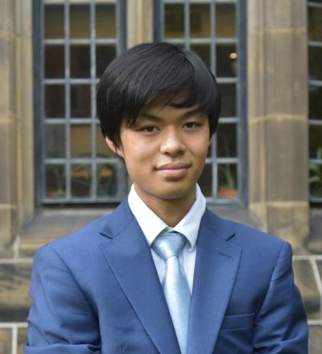

hey, i'm matthew chen
I’m an UWaterloo student in Electrical Engineering! Roll Warriors 🦁
about me 🪴
- worked with the Kundur Research Lab → applying CNNs in detecting power grid anomalies
- Non-Trivial Cohort 4 → neuromorphic chip applications in the IoT/smart grid
- met Peter Singer + Yoshua Bengio
- dev 💻 with Hatch Coding x Mark Rober
- ran SOMA, Canada’s largest HS-run Model UN conference with Pericles Lewis 🐐, Yale dean
- helped FGLI parents save $35k through music non-profit taught 370 hours
- Intel scholarship 🎓
- 5️⃣ on AP calc, chem, physics, cs, english lit + comp, and seminar, 99th+ SAT
- SHAD ‘23 @ Lakehead
- loves to play piano🎹, saxophone 🎷, and badminton 🏸
current interests 💡
- intersection of ML 🤖 and computer hardware
- effective altruism and energy usage efficiency
- mechanical pencils (currently EDCing rOtring 800 ✏️)
- dead sea scrolls 📜
recent happenings ☀️
| aug 5, 2024 |
this webpage is live |
| jun 22, 2024 |
graduated high school 🫠|
| apr 29, 2024 |
opened the 51st annual iteration of SOMA |
papers 📜
Neuromorphic Computing for Smart Cities
Matthew Chen,, Iris Litiu, Christina Lu
paper
| researchgate
| GitHub